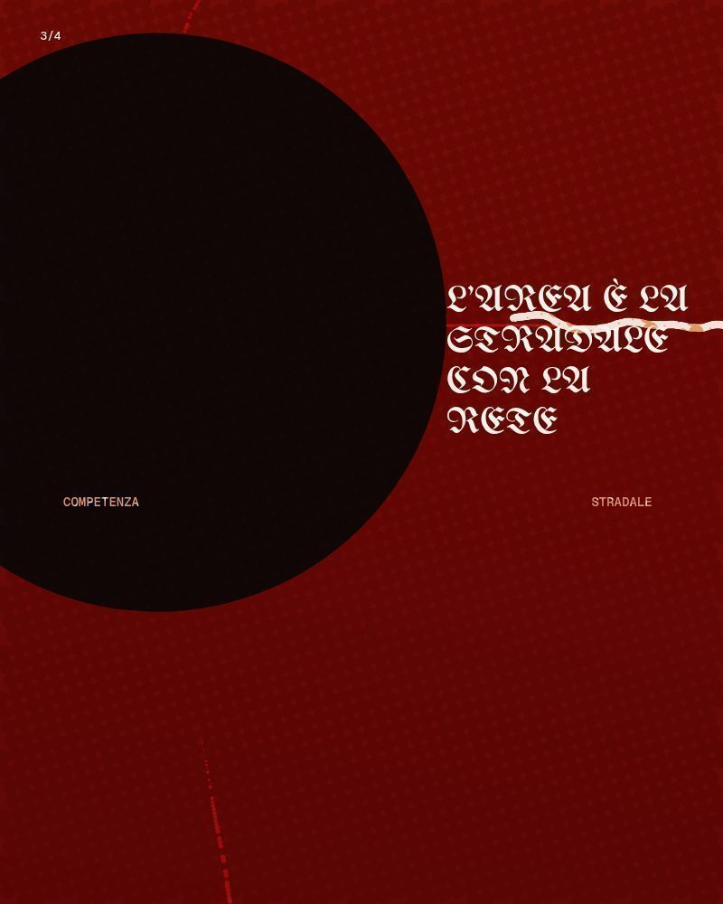
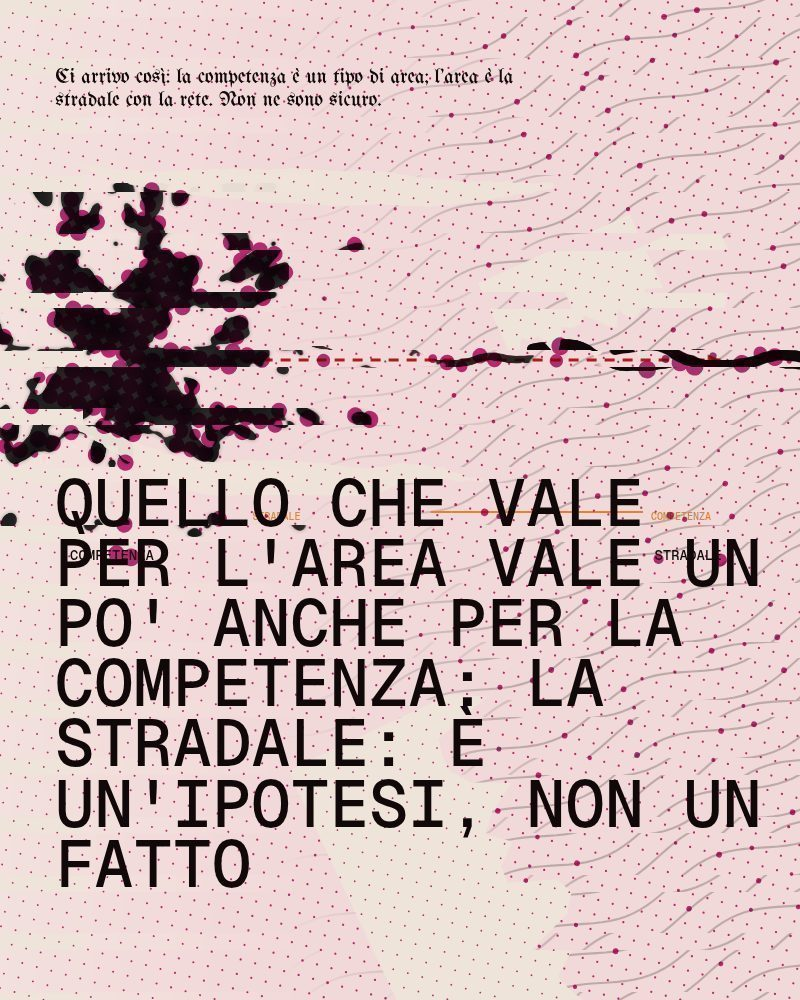

Quello che vale per l'area vale un po' anche per la competenza

1/4 · COMPETENZA
Comincio dalla definizione: la competenza è una specie di plaga. Per quello che ho capito, la regione ha la competenza sulla tutela e parte delle competenze.

2/4 · La competenza è un tipo di area

3/4 · L'area è la stradale con la rete

4/4 · Quello che vale per l'area vale un po' anche per la competenza: la stradale: è un'ipotesi, non un fatto
Ci arrivo così: la competenza è un tipo di area; l'area è la stradale con la rete. Non ne sono sicuro.
azzardo: quello che vale per l'area vale un po' anche per la competenza: la stradale: è un'ipotesi, non un fatto
che cosa lega la competenza alla stradale?